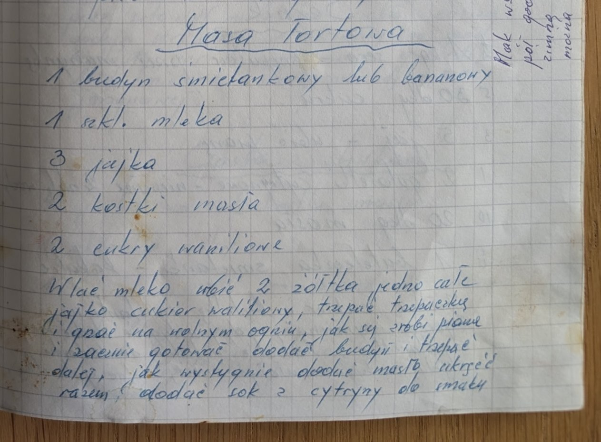

Masa tortowa


Składniki
- 1 budyń śmietankowy lub bananowy
- 1 szkl. mleka
- 3 jajka
- 2 kostki masła
- 2 cukry waniliowe
- sok z cytryny do smaku
Przygotowanie
- Wlać mleko, ubić 2 żółtka, jedno całe jajko i cukier waniliowy, trzepać trzepaczką i grzać na wolnym ogniu.
- Jak się zrobi piana i zacznie gotować, dodać budyń i trzepać dalej.
- Jak wystygnie, dodać masło, ukręcić razem.
- Dodać sok z cytryny do smaku.
Oryginalny zapis
Masa tortowa 1 budyń śmietankowy lub bananowy 1 szkl. mleka 3 jajka 2 kostki masła 2 cukry waniliowe Wlać mleko ubić 2 żółtka jedno całe jajko cukier waniliowy, trzepać trzepaczką i grzać na wolnym ogniu, jak się zrobi piana i zacznie gotować dodać budyń i trzepać dalej, jak wystygnie dodać masło ukręcić razem, dodać sok z cytryny do smaku